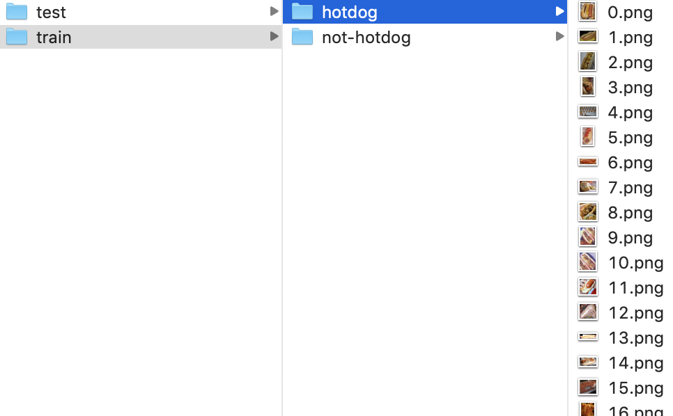
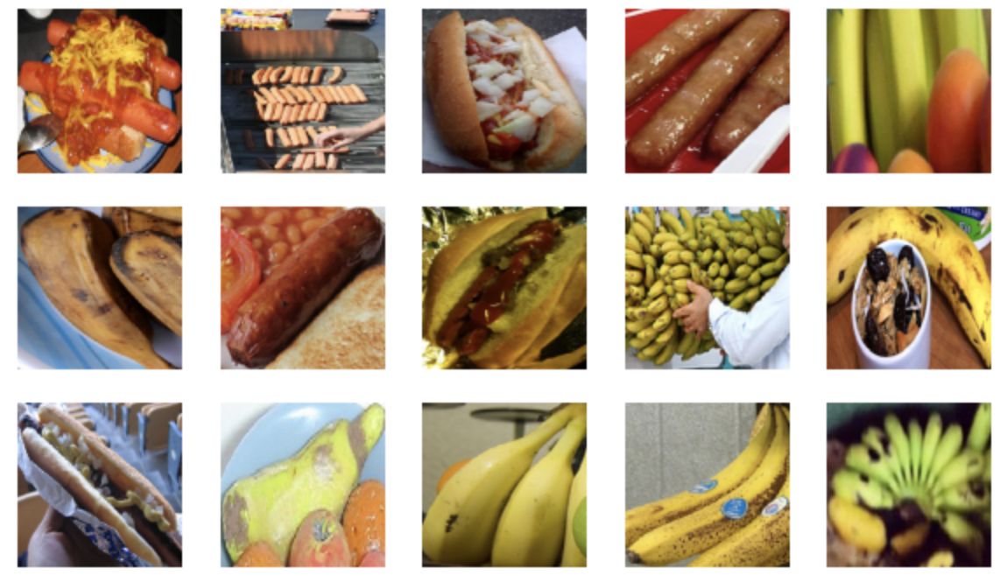
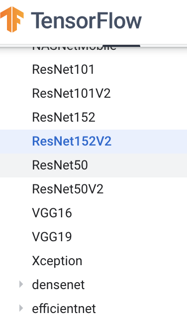

4.7微调
学习目标
- 知道微调的原理
- 能够利用微调模型来完成图像的分类任务
1.微调
如何在只有6万张图像的MNIST训练数据集上训练模型。学术界当下使用最广泛的大规模图像数据集ImageNet，它有超过1,000万的图像和1,000类的物体。然而，我们平常接触到数据集的规模通常在这两者之间。假设我们想从图像中识别出不同种类的椅子，然后将购买链接推荐给用户。一种可能的方法是先找出100种常见的椅子，为每种椅子拍摄1,000张不同角度的图像，然后在收集到的图像数据集上训练一个分类模型。另外一种解决办法是应用迁移学习（transfer learning），将从源数据集学到的知识迁移到目标数据集上。例如，虽然ImageNet数据集的图像大多跟椅子无关，但在该数据集上训练的模型可以抽取较通用的图像特征，从而能够帮助识别边缘、纹理、形状和物体组成等。这些类似的特征对于识别椅子也可能同样有效。
微调由以下4步构成。
- 在源数据集（如ImageNet数据集）上预训练一个神经网络模型，即源模型。
- 创建一个新的神经网络模型，即目标模型。它复制了源模型上除了输出层外的所有模型设计及其参数。我们假设这些模型参数包含了源数据集上学习到的知识，且这些知识同样适用于目标数据集。我们还假设源模型的输出层跟源数据集的标签紧密相关，因此在目标模型中不予采用。
- 为目标模型添加一个输出大小为目标数据集类别个数的输出层，并随机初始化该层的模型参数。
- 在目标数据集（如椅子数据集）上训练目标模型。我们将从头训练输出层，而其余层的参数都是基于源模型的参数微调得到的。

当目标数据集远小于源数据集时，微调有助于提升模型的泛化能力。
2.热狗识别
接下来我们来实践一个具体的例子：热狗识别。将基于一个小数据集对在ImageNet数据集上训练好的ResNet模型进行微调。该小数据集含有数千张热狗或者其他事物的图像。我们将使用微调得到的模型来识别一张图像中是否包含热狗。
首先，导入实验所需的工具包。
import tensorflow as tf
import numpy as np
2.1 获取数据集
我们首先将数据集放在路径hotdog/data之下:

每个类别文件夹里面是图像文件。
上一节中我们介绍了ImageDataGenerator进行图像增强，我们可以通过以下方法读取图像文件，该方法以文件夹路径为参数,生成经过图像增强后的结果，并产生batch数据：
flow_from_directory(self, directory,
target_size=(256, 256), color_mode='rgb',
classes=None, class_mode='categorical',
batch_size=32, shuffle=True, seed=None,
save_to_dir=None）
主要参数：
- directory: 目标文件夹路径，对于每一个类对应一个子文件夹，该子文件夹中任何JPG、PNG、BNP、PPM的图片都可以读取。
- target_size: 默认为(256, 256)，图像将被resize成该尺寸。
- batch_size: batch数据的大小，默认32。
- shuffle: 是否打乱数据，默认为True。
我们创建两个tf.keras.preprocessing.image.ImageDataGenerator实例来分别读取训练数据集和测试数据集中的所有图像文件。将训练集图片全部处理为高和宽均为224像素的输入。此外，我们对RGB（红、绿、蓝）三个颜色通道的数值做标准化。
# 获取数据集
import pathlib
train_dir = 'transferdata/train'
test_dir = 'transferdata/test'
# 获取训练集数据
train_dir = pathlib.Path(train_dir)
train_count = len(list(train_dir.glob('*/*.jpg')))
# 获取测试集数据
test_dir = pathlib.Path(test_dir)
test_count = len(list(test_dir.glob('*/*.jpg')))
# 创建imageDataGenerator进行图像处理
image_generator = tf.keras.preprocessing.image.ImageDataGenerator(rescale=1./255)
# 设置参数
BATCH_SIZE = 32
IMG_HEIGHT = 224
IMG_WIDTH = 224
# 获取训练数据
train_data_gen = image_generator.flow_from_directory(directory=str(train_dir),
batch_size=BATCH_SIZE,
target_size=(IMG_HEIGHT, IMG_WIDTH),
shuffle=True)
# 获取测试数据
test_data_gen = image_generator.flow_from_directory(directory=str(test_dir),
batch_size=BATCH_SIZE,
target_size=(IMG_HEIGHT, IMG_WIDTH),
shuffle=True)
下面我们随机取1个batch的图片然后绘制出来。
import matplotlib.pyplot as plt
# 显示图像
def show_batch(image_batch, label_batch):
plt.figure(figsize=(10,10))
for n in range(15):
ax = plt.subplot(5,5,n+1)
plt.imshow(image_batch[n]）
plt.axis('off')
# 随机选择一个batch的图像
image_batch, label_batch = next(train_data_gen)
# 图像显示
show_batch(image_batch, label_batch)

2.2 模型构建与训练
我们使用在ImageNet数据集上预训练的ResNet-50作为源模型。这里指定weights='imagenet'来自动下载并加载预训练的模型参数。在第一次使用时需要联网下载模型参数。
Keras应用程序（keras.applications）是具有预先训练权值的固定架构，该类封装了很多重量级的网络架构，如下图所示：

实现时实例化模型架构：
tf.keras.applications.ResNet50(
include_top=True, weights='imagenet', input_tensor=None, input_shape=None,
pooling=None, classes=1000, **kwargs
)
主要参数：
- include_top: 是否包括顶层的全连接层。
- weights: None 代表随机初始化， 'imagenet' 代表加载在 ImageNet 上预训练的权值。
- input_shape: 可选，输入尺寸元组，仅当 include_top=False 时有效，否则输入形状必须是 (224, 224, 3)（channels_last 格式）或 (3, 224, 224)（channels_first 格式）。它必须为 3 个输入通道，且宽高必须不小于 32，比如 (200, 200, 3) 是一个合法的输入尺寸。
在该案例中我们使用resNet50预训练模型构建模型：
# 加载预训练模型
ResNet50 = tf.keras.applications.ResNet50(weights='imagenet', input_shape=(224,224,3))
# 设置所有层不可训练
for layer in ResNet50.layers:
layer.trainable = False
# 设置模型
net = tf.keras.models.Sequential()
# 预训练模型
net.add(ResNet50)
# 展开
net.add(tf.keras.layers.Flatten())
# 二分类的全连接层
net.add(tf.keras.layers.Dense(2, activation='softmax'))
接下来我们使用之前定义好的ImageGenerator将训练集图片送入ResNet50进行训练。
# 模型编译：指定优化器，损失函数和评价指标
net.compile(optimizer='adam',
loss='categorical_crossentropy',
metrics=['accuracy'])
# 模型训练：指定数据，每一个epoch中只运行10个迭代，指定验证数据集
history = net.fit(
train_data_gen,
steps_per_epoch=10,
epochs=3,
validation_data=test_data_gen,
validation_steps=10
)
Epoch 1/3
10/10 [==============================] - 28s 3s/step - loss: 0.6931 - accuracy: 0.5031 - val_loss: 0.6930 - val_accuracy: 0.5094
Epoch 2/3
10/10 [==============================] - 29s 3s/step - loss: 0.6932 - accuracy: 0.5094 - val_loss: 0.6935 - val_accuracy: 0.4812
Epoch 3/3
10/10 [==============================] - 31s 3s/step - loss: 0.6935 - accuracy: 0.4844 - val_loss: 0.6933 - val_accuracy: 0.4875
总结
- 微调是目标模型复制了源模型上除了输出层外的所有模型设计及其参数，并基于目标数据集微调这些参数。而目标模型的输出层需要从头训练。
- 利用tf.keras中的application实现迁移学习